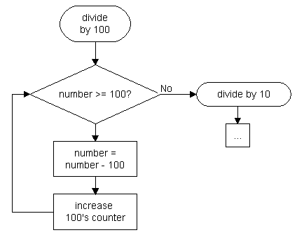

Converting integers to ASCII coded decimal is pretty simple. To understand how it is done, you first have to think about how the numbers we're using in written documents are built up:
Let's take the number 233 and rip it apart:
|
Multiply number with
|
100
|
10
|
1
|
|
decimal
|
2
|
3
|
3
|
|
result
|
200
|
30
|
3
|
These add up to 233. The number consists of single digits which specifiy the number of hundreds, tens, and ones we add together.
To get these results, we need to divide the number; first by 100, then by 10 and then by 1. As the AVR doesn't have a divide instruction, this has to be done manually:
Divide by 100:
- copy the number into a temporary register
- compare the number with 100
- if greater or equal, increase the hundreds count and subtract 100 from the temporary register
- go to the compare again
When this is done, the number in the temporary register is lower than 100. Now we can proceed with 10s and 1s. Instead of dividing it by 1 we can just copy the remaining number to the register that holds the ones.
Unfortunately, this is not enough to convert a number to decimal coded ASCII. In an ASCII table we can see that '0' is 0x30. So we add 0x30 to the single digits (hundreds, tens, ones) and can now print it on the screen (via UART, USB, LCD interface, whatever).
It's now also possible to reformat the number, delete characters we don't need (print a space instead of 0 hundreds if the number was lower than 100) or add additional characters in between.
Here's a flow chart of how the conversion can be done:

It should be pretty easy for you to write the code for this yourself.
Doing this with a 16-bit number is just the same, but with 5 digits and 16-bit compares. The code space needed (as well as cpu time) is 40% bigger. If you have a lot of free program space, you can build up a case-like structure to do the conversion: If the number is greater than 200, the hundreds counter is loaded with 2 and 200 is subtracted from the original number. This is faster but requires more space. It's up to you.